ディファレンシャル キャリヤASSY RR（4WD） 分解 |
| 1. ディファレンシャル キャリヤASSY RR固定 |
| 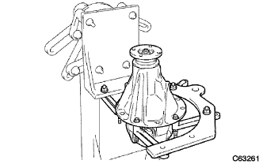 |
リヤディファレンシャルキャリアASSYをオーバーホールアタッチメントに固定する。
| 2. デイフアレンシヤルリングギヤ振れ点検 |
| 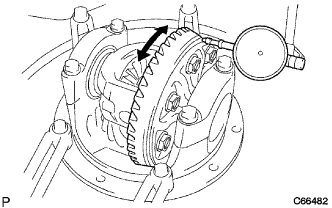 |
ダイヤルゲージをディファレンシャルリングギヤの背面に直角に取り付け、リングギヤの振れを点検する。
| 3. デイフアレンシヤルリングギヤバツクラツシユ点検 |
| 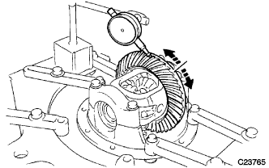 |
ダイヤルゲージをディファレンシャルリングギヤの歯面先端に直角に当てる。
ディファレンシャルドライブピニオンを固定し、ディファレンシャルリングギヤを動かしてディファレンシャルリングギヤバックラッシュを点検する。
| 4. デイフアレンシヤルサイドギヤとデイフアレンシヤルピニオンのバツクラツシユ点検 |
| 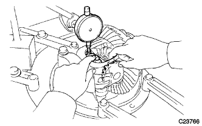 |
ダイヤルゲージをディファレンシャルサイドギヤの歯面先端に直角に当てる。
ピニオンをディファレンシャルケースの方へ固定し、ディファレンシャルサイドギヤバックラッシュを点検する。
| 5. リヤ ドライブピニオン コンパニオンフランジ RR振れ点検 |
| 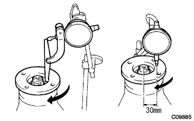 |
ダイヤルゲージをリヤドライブピニオンコンパニオンフランジRRの内周面に直角に取り付け、リヤドライブピニオンコンパニオンフランジRRの縦振れを点検する。
ダイヤルゲージをリヤドライブピニオンコンパニオンフランジRR面の図の位置に直角に取り付け、リヤドライブピニオンコンパニオンフランジRRの横振れを点検する。
| 6. デイフアレンシヤルドライブピニオンプレロード点検 |
トルクレンチを使用して、ディファレンシャルドライブピニオンとディファレンシャルリングギヤのバックラッシュの範囲内で起動トルクを点検する。
総合プレロード点検のために、プレロードを記録しておく。
| 7. 総合プレロード点検 |
| 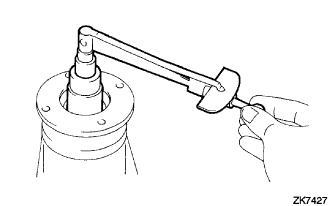 |
トルクレンチおよび、ディープソケットレンチ(24mm)を使用して、ディファレンシャルドライブピニオンとディファレンシャルリングギヤ歯面を当てた状態でプレロードを点検する。
| 8. リヤ ドライブピニオン ナット取りはずし |
| 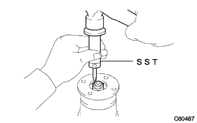 |
SSTおよびハンマーを使用して、リヤドライブピニオンナットのかしめを解く。
| 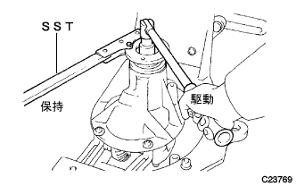 |
SSTを使用してフランジを固定し、ディープソケットレンチ(24mm)を使用してリヤドライブピニオンナットを取りはずす。
| 9. リヤ ドライブピニオン コンパニオンフランジ RR取りはずし |
| 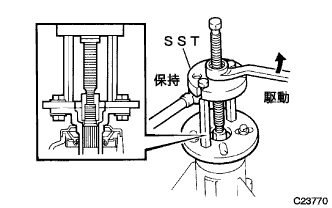 |
SSTを使用して、リヤドライブピニオンコンパニオンフランジRRを取りはずす。
| 10. リヤディファレンシャル ダストデフレクタ取りはずし |
| 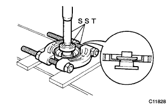 |
SSTおよびプレスを使用して、リヤディファレンシャルダストデフレクタを取りはずす。
| 11. リヤディファレンシャル キャリア オイルシール取りはずし |
| 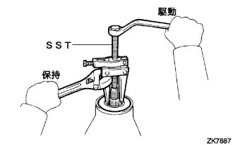 |
SSTを使用して、リヤディファレンシャルオイルシールを取りはずす。
| 12. リヤディファレンシャル ドライブピニオン オイルスリンガ取りはずし |
| 13. リヤドライブ ピニオン テーパードローラベアリング FR取りはずし |
| 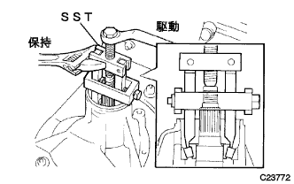 |
SSTを使用して、リヤドライブピニオンテーパードローラーベアリングFRをリヤディファレンシャルキャリアASSYから取りはずす。
| 14. リヤディファレンシャル ドライブピニオン ベアリング スペーサ取りはずし |
| 15. リヤディファレンシャル ケースSUB-ASSY取りはずし |
ベアリングキャップとディファレンシャルキャリアに合わせマークを付ける。
ボルト4本をはずし、ベアリングキャップ2個を取りはずす。
| 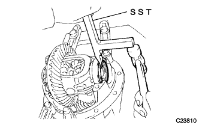 |
SSTを使用して、リヤディファレンシャルサイドギヤスラストシム(バックラッシュ調整用)を取りはずす。
リヤディファレンシャルケースをベアリングアウタレースとともに取りはずす。
| 16. デイフアレンシヤルドライブピニオン取りはずし |
| 17. リヤドライブ ピニオン テーパードローラベアリング RR取りはずし |
| 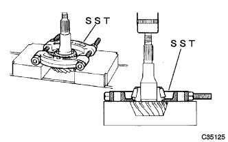 |
SSTおよびプレスを使用して、ディファレンシャルドライブピニオンからリヤドライブピニオンテーパードローラベアリングRRを取りはずす。
| 18. フロントベアリングアウタレース取りはずし |
| 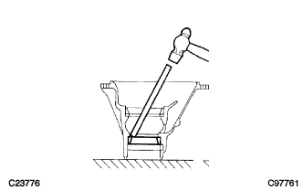 |
ブラスバーおよびハンマーを使用して、リヤドライブピニオンテーパードローラーベアリングFRアウタレースを軽く均等にたたきながら取りはずす。
| 19. リヤベアリングアウタレース取りはずし |
| 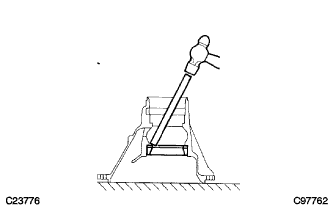 |
ブラスバーおよびハンマーを使用して、ドライブピニオンワッシャを軽く均等にたたきながら、ドライブピニオンワッシャおよびリヤドライブピニオンテーパードローラーベアリングRRアウタレースを取りはずす。
| 20. デイフアレンシヤルリングギヤ取りはずし |
リヤディファレンシャルケースとディファレンシャルリングギヤに合わせマークを付ける。
ボルト8本を取りはずす。
プラスチックハンマーを使用して、ディファレンシャルリングギヤ外周を均等にたたいて取りはずす。
| 21. リヤディファレンシャル ケースSUB-ASSY振れ点検 |
リヤディファレンシャルケースをリヤディファレンシャルキャリアASSYに取り付ける。
ボルト各2本で、左右のベアリングキャップを取り付ける。
| 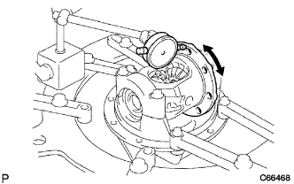 |
ダイヤルゲージをリヤディファレンシャルケースのフランジ面に直角に取り付け、リヤディファレンシャルケースの振れを点検する。
ボルト4本をはずし、ベアリングキャップおよびリヤディファレンシャルケースを取りはずす。
| 22. リヤディファレンシャルケース ベアリング取りはずし |
| 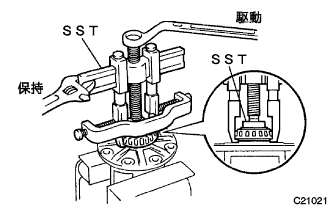 |
SSTを使用して、リヤディファレンシャルケースからリヤディファレンシャルケースベアリング2個を取りはずす。
| 23. ディファレンシャルケースASSY分解 |
| 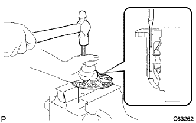 |
ピンポンチおよびハンマーを使用して、ピニオンシャフトピンを打ち抜く。
| 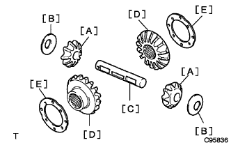 |
リヤディファレンシャルケースから下記部品を取りはずす。
リヤディファレンシャルピニオン(2個)[A]
リヤディファレンシャルピニオンスラストワッシャ(2枚)[B]
リヤディファレンシャルピニオンシャフト[C]
リヤディファレンシャルサイドギヤ(2個)[D]
リヤディファレンシャルサイドギヤスラストワッシャNo.1(2枚)[E]
| 24. デイフアレンシヤルサイドギヤおよびデイフアレンシヤルピニオン摩耗点検 |
| 25. デイフアレンシヤルケース亀裂，損傷の有無点検 |